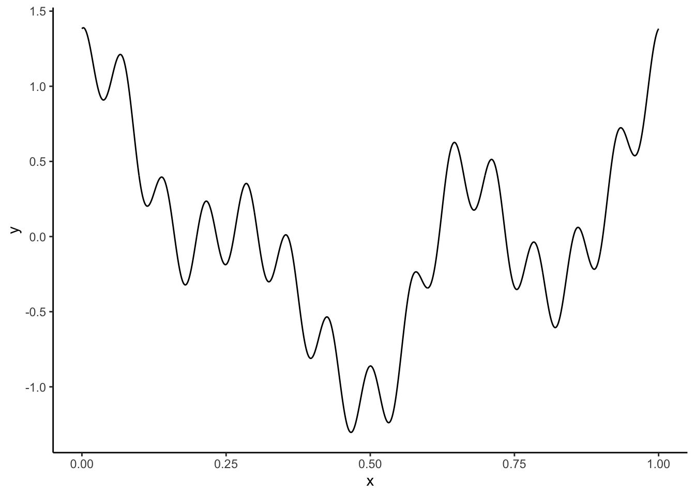
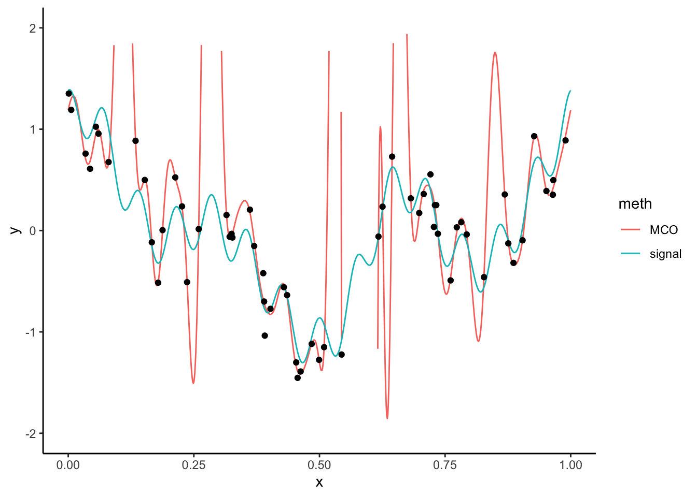

Chapitre 3 Régressions pénalisées (ou sous contraintes)
Nous considérons toujours le modèle linéaire
\[Y=\beta_0+\beta_1X_1+\dots+\beta_dX_d+\varepsilon\] Lorsque \(d\) est grand ou que les variables sont linéairement dépendantes, les estimateurs des moindres carrées peuvent être mis en défaut. Les méthodes pénalisées ou sous contraintes consistent alors à restreindre l’espace sur lequel on minimise ce critère. On va alors chercher le vecteur \(\beta\) qui minimise
\[\sum_{i=1}^n \left(y_i-\beta_0-\sum_{j=1}^dx_{ij}\beta_j\right)^2\quad\text{sous la contrainte }\quad\sum_{j=1}^d\beta_j^2\leq t\] ou de façon équivalente (dans le sens où il existe une équivalence entre \(t\) et \(\lambda\))
\[\sum_{i=1}^n \left(y_i-\beta_0-\sum_{j=1}^dx_{ij}\beta_j\right)^2+\lambda\sum_{j=1}^d\beta_j^2.\]
Les estimateurs obtenus sont les estimateurs ridge. Les estimateurs lasso s’obtiennent en remplaçant la contrainte ou la pénalité par une norme 1 (\(\sum_{j=1}^d|\beta_j|\)). Nous présentons dans cette partie les étapes principales qui permettent de faire ce type de régression avec R. Le package le plus souvent utilisé est glmnet.
3.1 Ridge et lasso avec glmnet
On considère le jeu de données ozone.txt où on cherche à expliquer la concentration maximale en ozone relevée sur une journée (variable maxO3) par d’autres variables essentiellement météorologiques.
ozone <- read.table("data/ozone.txt")
head(ozone)
maxO3 T9 T12 T15 Ne9 Ne12 Ne15 Vx9 Vx12
20010601 87 15.6 18.5 18.4 4 4 8 0.6946 -1.7101
20010602 82 17.0 18.4 17.7 5 5 7 -4.3301 -4.0000
20010603 92 15.3 17.6 19.5 2 5 4 2.9544 1.8794
20010604 114 16.2 19.7 22.5 1 1 0 0.9848 0.3473
20010605 94 17.4 20.5 20.4 8 8 7 -0.5000 -2.9544
20010606 80 17.7 19.8 18.3 6 6 7 -5.6382 -5.0000
Vx15 maxO3v vent pluie
20010601 -0.6946 84 Nord Sec
20010602 -3.0000 87 Nord Sec
20010603 0.5209 82 Est Sec
20010604 -0.1736 92 Nord Sec
20010605 -4.3301 114 Ouest Sec
20010606 -6.0000 94 Ouest PluieContrairement à la plupart des autres package R qui permettent de faire de l’apprentissage, le package glmnet n’autorise pas l’utilisation de formules : il faut spécifier explicitement la matrice des \(X\) et le vecteur des \(Y\). On peut obtenir la matrice des \(X\) et notamment le codage des variables qualitatives avec la fonction model.matrix:
Charger le package
glmnetet à l’aide de la fonctionglmnetcalculer les estimateursridgeetlasso.Analyser les sorties qui se trouvent dans les arguments
lambdaetbetadeglmnet.Visualiser les chemins de régularisation des estimateurs
ridgeetlasso. On pourra utiliser la fonctionplot.Sélectionner les paramètres de régularisation à l’aide de la fonction
cv.glmnet. On pourra notamment faire unplotde l’objet et expliquer le graphe obtenu.On souhaite prédire la variable cible pour de nouveaux individus, par exemple les 25ème et 50ème individus du jeu de données. Calculer les valeurs prédites pour ces deux individus.
A l’aide d’une validation croisée, comparer les performances des estimateurs MCO, ridge et lasso. On pourra utiliser les données
ozone_complet.txtqui contiennent plus d’individus et de variables.Refaire la question précédente en considérant toutes les interactions d’ordre 2.
3.2 Reconstruction d’un signal
Le fichier signal.csv contient un signal que l’on peut représenter par une fonction \(m:\mathbb R\to\mathbb R\). On le visualise

Plaçons nous dans le cas où on ne dispose que d’une version bruitée de ce signal. La courbe n’est pas observée mais on dispose d’un échantillon \((x_i,y_i),i=1,\dots,n\) généré selon le modèle
\[y_i=m(x_i)+\varepsilon_i.\]
Le fichier ech_signal.csv contient \(n=60\) observations issues de ce modèle. On représente les données et la courbe
donnees <- read_csv("data/ech_signal.csv")
ggplot(signal)+aes(x=x,y=y)+geom_line()+
geom_point(data=donnees,aes(x=X,y=Y))
Nous cherchons dans cette partie à reconstruire le signal à partir de l’échantillon. Bien entendu, vu la forme du signal, un modèle linéaire de la forme
\[y_i=\beta_0+\beta_1x_i+\varepsilon_i\]
n’est pas approprié. De nombreuses approches en traitement du signal proposent d’utiliser une base ou dictionnaire représentée par une collection de fonctions \(\{\psi_j(x)\}_{j=1,\dots,K}\) et de décomposer le signal dans cette base :
\[m(x)\approx \sum_{j=1}^K \beta_j\psi_j(x).\]
Pour un dictionnaire donné, on peut alors considérer un modèle linéaire
\[\begin{equation} y_i=\sum_{j=1}^K \beta_j\psi_j(x)+\varepsilon_i. \tag{3.1} \end{equation}\]
Le problème est toujours d’estimer les paramètres \(\beta_j\) mais les variables sont maintenant définies par les élements du dictionnaire. Il existe différents types de dictionnaire, dans cet exercice nous proposons de considérer la base de Fourier définie par
\[\psi_0(x)=1,\quad \psi_{2j-1}(x)=\cos(2j\pi x)\quad\text{et}\quad \psi_{2j}(x)=\sin(2j\pi x),\quad j=1,\dots,K.\]
Écrire une fonction R qui admet en entrée :
- une grille de valeurs de
x(un vecteur) - une valeur de
K(un entier positif)
et qui renvoie en sortie une matrice qui contiennent les valeurs du dictionnaire pour chaque valeur de
x. Cette matrice devra donc contenir2Kcolonnes et le nombre de lignes sera égal à la longueur du vecteurx.- une grille de valeurs de
On fixe
K=25. Calculer les estimateurs des moindres carrés du modèle (3.1).Représenter le signal estimé. Commenter le graphe.
Calculer les estimateurs lasso et représenter le signal issu de ces estimateurs.
Identifier les coefficients lasso sélectionnés qui ne sont pas nuls.
Ajouter les signaux ajustés par les algorithme PCR et PLS.
3.3 Régression logistique pénalisée
On considère le jeu de données sur la détection d’images publicitaires disponible ici https://archive.ics.uci.edu/ml/datasets/internet+advertisements.
ad.data <- read.table("data/ad_data.txt",header=FALSE,sep=",",dec=".",na.strings = "?",strip.white = TRUE)
names(ad.data)[ncol(ad.data)] <- "Y"
ad.data$Y <- as.factor(ad.data$Y)La variable à expliquer est
Cette variable est binaire. On considère une régression logistique pour expliquer cette variable. Le nombre de variables explicatives étant important, comparer les algorithmes du maximum de vraisemblance aux algorithmes de type ridge/lasso en faisant une validation croisée 10 blocs. On pourra utiliser comme critère de comparaison l’erreur de classification, la courbe ROC et l’AUC. Il faudra également prendre des décisions pertinentes vis-à-vis des données manquantes…
3.4 Exercices
On considère le modèle de régression \[Y_i=\beta_1x_{i1}+\dots+\beta_px_{ip}+\varepsilon_i\] où les \(\varepsilon_i\) sont i.i.d de loi \(\mathcal N(0,\sigma^2)\). Pour \(\lambda\geq 0\), on note \(\hat\beta_R(\lambda)\) l’estimateur ridge défini par \[\hat\beta_R(\lambda)=\mathop{\mathrm{argmin}}_\beta\sum_{i=1}^n\left(y_i-\sum_{j=1}^px_{ij}\beta_j\right)^2+\lambda\sum_{j=1}^p\beta_j^2.\]
Exprimer \(\hat\beta_R(\lambda)\) en fonction de \(\mathbb X\), \(\mathbb Y\) et \(\lambda\).
Étudier le biais et la variance de \(\hat\beta_R(\lambda)\) en fonction de \(\lambda\). On pourra également faire la comparaison avec l’estimateur des MCO.
On suppose que la matrice \(\mathbb X\) est orthogonale. Exprimer les estimateurs \(\hat\beta_{R,j}(\lambda)\) en fonction des estimateurs des MCO \(\hat\beta_j, j=1,\dots,p\). Interpréter.
On rappelle qu’une fonction \(F:\mathbb R^n\to\mathbb R\) est convexe si \(\forall x,y\in\mathbb R^n\), \(\forall\lambda\in[0,1]\) on a \[F(\lambda x+(1-\lambda) y)\leq \lambda F(x)+(1-\lambda)F(y).\] On définit la sous-différentielle d’une fonction convexe \(F\) par \[\partial F(x)=\{w\in\mathbb R^n:F(y)\geq F(x)+\langle w,y-x\rangle\textrm{ pour tout }y\in\mathbb R^n\}.\] On admettra que les minima d’une fonction convexe \(F:\mathbb R^n\to\mathbb R\) sont caractérisés par \[x^\star\in\mathop{\mathrm{argmin}}_{x\in\mathbb R^n}F(x)\Longleftrightarrow 0\in \partial F(x^\star)\] et que \(\partial F(x)=\{\nabla F(x)\}\) lorsque \(F\) est différentiable en \(x\).
Montrer que pour \(x\in\mathbb R\) \[ \partial |x|=\left\{ \begin{array}{ll} \textrm{signe}(x) & \textrm{si } x\neq 0 \\ \left[-1;1\right] & \textrm{sinon,} \end{array}\right. \] où \(\text{signe}(x)=\mathbf 1_{x>0}-\mathbf 1_{x\leq 0}\).
Soit \(x\in\mathbb R^n\).
Montrer que \[\partial\|x\|_1=\{w\in\mathbb R^n:\langle w,x\rangle=\|x\|_1\text{ et }\|w\|_\infty\leq 1\}.\] On pourra utiliser que pour tout \(p,q\) tels que \(1/p+1/q=1\) on a \[\|x\|_p=\sup\left\{\langle w,x\rangle:\|w\|_q\leq 1\right\}.\]
En déduire \[\partial\|x\|_1=\{w\in\mathbb R^n:w_j=\textrm{signe}(x_j)\textrm{ si }x_j\neq 0, w_j\in[-1,1]\textrm{ si }x_j=0\}.\]
Étant données \(n\) observations \((x_i,y_i),i=1,\dots,n\) telles que \(x_i\in\mathbb R^p\) et \(y_i\in\mathbb R\) on rappelle que l’estimateur lasso \(\hat\beta(\lambda)\) est construit en minimisant \[\begin{equation} \mathcal L(\beta)=\|Y-\mathbb X\beta\|_2^2+\lambda\|\beta\|_1. \tag{3.2} \end{equation}\] On admettra que la sous-différentielle \(\partial \mathcal L(\beta)\) est donnée par \[\partial \mathcal L(\beta)=\left\{-2\mathbb X^t(Y-\mathbb X\beta)+\lambda z:z\in\partial\|\beta\|_1\right\}.\] Montrer que \(\hat\beta(\lambda)\) vérifie \[\mathbb X^t\mathbb X\hat\beta(\lambda)=\mathbb X^tY-\frac{\lambda}{2}\hat z\] où \(\hat z\in\mathbb R^p\) vérifie \[\hat z_j\left\{ \begin{array}{ll} =\textrm{signe}(\hat\beta_j(\lambda)) & \textrm{si } \hat\beta_j(\lambda)\neq 0 \\ \in\left[-1;1\right] & \textrm{sinon.} \end{array}\right.\]
On suppose maintenant que la matrice \(\mathbb X\) est orthogonale.
Montrer que \[\textrm{signe}(\hat\beta_j(\lambda))=\textrm{signe}(\mathbb X_j^tY)\quad\textrm{lorsque }\hat\beta_j(\lambda)\neq 0\] et \(\hat\beta_j(\lambda)=0\) si et seulement si \(|\mathbb X_j^tY|\leq \lambda/2\).
En déduire \[\hat\beta_j(\lambda)=\mathbb X_j^tY\left(1-\frac{\lambda}{2|\mathbb X_j^tY|}\right)_+,\quad j=1,\dots,p\] où \((x)_+=\max(x,0)\). Interpréter ce résultat.
Soit \(\hat\beta^{1}(\lambda)\) et \(\hat\beta^{2}(\lambda)\) deux solutions qui minimisent (3.2). Soit \(\hat\beta=(\hat\beta^{1}(\lambda)+\hat\beta^{2}(\lambda))/2\).
Montrer que si \(\mathbb X \hat\beta^{1}(\lambda)\neq\mathbb X \hat\beta^{2}(\lambda)\) alors \[\|\mathbb Y-\mathbb X\hat\beta\|_2^2+\lambda\|\hat\beta\|_1<\frac{1}{2}\left(\|\mathbb Y-\mathbb X\hat\beta^1(\lambda)\|_2^2+\lambda\|\hat\beta^1(\lambda)\|_1+\|\mathbb Y-\mathbb X\hat\beta^2(\lambda)\|_2^2+\lambda\|\hat\beta^2(\lambda)\|_1\right).\] On pourra utiliser la convexité (forte) de \(x\mapsto\|x\|_2^2\).
En déduire que \(\mathbb X \hat\beta^{1}(\lambda)=\mathbb X \hat\beta^{2}(\lambda)\).
Références
Giraud, C. 2015. Introduction to High-Dimensional Statistics. CRC Press.